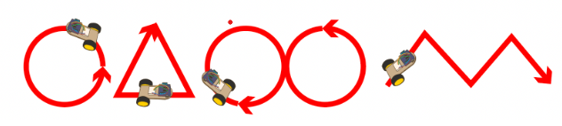

Introduction
This is the first in a two-part series introducing you to building and programming your own robot. Today you’ll learn about DC motors, motor control, and robot assembly. By the end of this session, your robot will drive a trajectory you designed.
🦺 Safety & Important Tips
(1 minute read)
- Unpower your circuit when making any change
- Double check your wiring before plugging in
- Watch for solder bridges
- Components can be fragile—treat them carefully
🔨 Fabrication Quest of the Day
You will assemble and drive a robotic car:
- Assemble a robotic car without sensors
- Give basic driving commands
- Your instructors will provide all necessary components (chassis, motors, Arduino, motor shield, etc.)

🏗️ Software & Hardware
Software: Arduino IDE
Hardware: Arduino, Motor Shield, DC Motors, Chassis

Part 1: Understanding Code and Testing the Motors (25 mins)
We are using the L293D motor shield. It supports 4 DC motors (or 2 steppers) and 2 servos.
We will use the AFMotor library to control our motors:
#include <AFMotor.h>
AF_DCMotor rightMotor(1);
AF_DCMotor leftMotor(2);
void setup() {
rightMotor.setSpeed(255);
leftMotor.setSpeed(255);
rightMotor.run(FORWARD);
leftMotor.run(FORWARD);
}
- Plug the motor shield into the Arduino with all pins aligned.
- Connect two yellow TT motors to M1 (left) and M2 (right) terminals. Red/black orientation doesn’t matter; swapping reverses direction.
- Upload the code. It should drive your motors forward at a constant speed. It will be slow because the Arduino is powered via USB. This will be fixed in Part 2 when using the battery.
- Modify the code to drive forward 3s, stop 1s, drive backward 3s, then repeat. Use the loop() function.
- Test your loop and verify motor behavior.
- Checkoff 1: Ask your instructor to verify Part 1. Demonstrate forward, stop, and backward motions.
Part 2: Assembling the Chassis
- Laser cut chassis (x1)
- Motors + mounts (x2)
- Arduino + motor shield (x1)
- Arduino mount (x1)
- Caster wheel + bracket (x2)
- M2x12 screws, M3x10 motor mounts, M3x25/M3x30 motors
- Attach the ball caster to its mount using screws, then secure to chassis with 3mmx8mm bolts.
- Add wheels. Push them on fully but carefully. Then plug in motors and battery to the shield:
• Feed servo wires through the back hole; yellow = SIGNAL, brown = GND.
• Feed motor wires through back hole; M1 = left motor, M2 = right motor.
• Attach power cables carefully without swapping polarity. - Attach Arduino (without shield) to mount and chassis using 3mmx16mm bolts, then add shield.
- Attach the small servo to front of chassis.
- Attach motor mounts with M3 nuts in hex cutouts.
- Attach motors to brackets with 3mmx25mm bolts.
- Attach battery pack at bottom with double-sided tape.
- Stick mini breadboard and ultrasound sensor to servo.

Checkoff 2: Ask your instructor for verification of Part 2. Batteries provided after checkoff.
Part 3: Driving Straight
Use your motor code to drive straight. Adjust motor speeds if needed.
Checkoff 3: Ask your instructor to verify Part 3.
Part 4: Creating Turning Functions
Implement turnRight() and turnLeft() functions for 90° turns.
Checkoff 4: Ask your instructor to verify Part 4.
Part 5: Driving a Loop
In loop(), drive in a square (50cm sides) clockwise and counterclockwise. Observe how accurately it returns to start.
Discuss potential causes for deviation and sensors needed for correction.
Checkoff 5: Ask your instructor to verify Part 5 (CCW/CW loops).
Part 6: Remix Driving!
Drive your robot in interesting shapes (circle, polygons, infinity symbol, math functions).
Checkoff 6: Ask your instructor to verify Part 6 (remix).